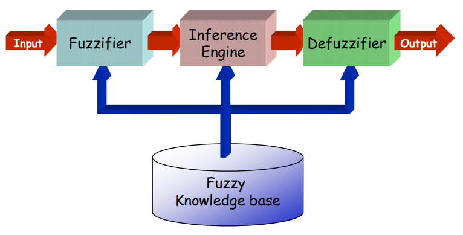
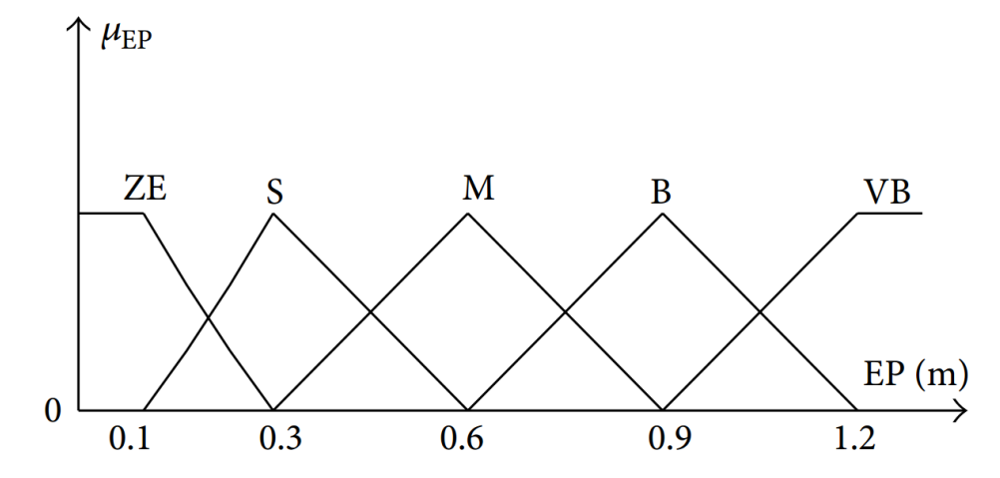
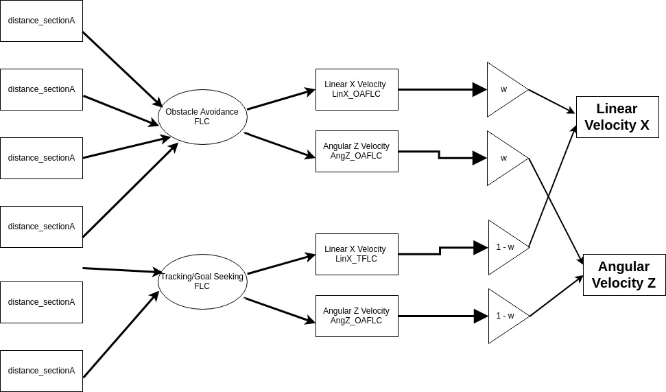

FEBRUARY-APRIL 2018
OBJECTIVE
Design of a Fuzzy Logic Controller (FLC) for mobile robot navigation in an unknown, static or dynamic envinronments using the Tracking FLC and Obstacle Avoidance FLC and implementation of the same on TurtleBot2 robot.
RESEARCH ASPECTS
• Accessing stereovision point-cloud data and laserscan data
• Defining membership functions for Obstacle Avoidance FLC and Tracking FLC inputs - distance between the robot and the target, distance between the robot and obstacle and the angular presence of the same
• Fuzzy Inference System design and defuzzification techniques
• Design of If-Else fuzzy rules for OAFLC and TFLC

Fuzzy Inference System - Controller Design

Membership Function for TFLC - Distance between robot and target
METHODOLOGY
The Takagi-Sugeno-Kang fuzzy inference technique and the Centroid defuzzification methods are used to implement our proposed controller
The TSK approach computes the output of the If-Else rules as a linear expression made up of weighted conditional components. Elaborately, the FIS
setup processes all If-Else conditional statements with the weights generated on the basis of the membership functions
and computes a new weight for execution of the condition
The Centroid defuzzification process computes a normalized weight distribution for conditions and thereafter their weighted sum to generate final numerical output values
The Gazebo simulation environment was used with a customized design of the world cluttered with obstacles
Weighted behavior fusion for both FLCs to obtain final robot commands.

Behavior Fusion
RESULTS
• The robot was successfully able to navigate through the environment and avoid obstacles enroute reaching the target.
• The controller was tested on several terminal states as well as environments